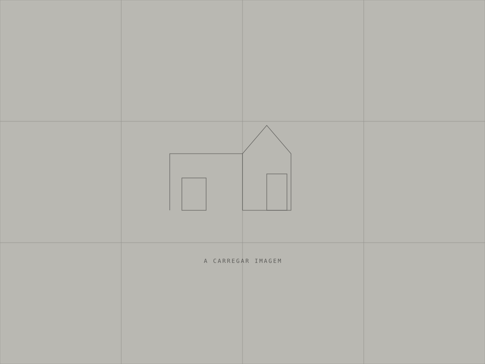

Dois volumes de betão apoiados num muro de granito existente, a 900 metros de altitude.

“A casa não se apoia na paisagem. Delimita-a.”
Ricardo Teles, sócio fundador
Memória
de obra
— palavras
A memória do projeto é preenchida a partir da ficha técnica. Ative JavaScript para ler o texto completo.
Corte A-A' / Fotografia
Arraste ↔ / teclas ← →
O corte é desenhado a partir das cotas reais do projeto.
Corte A-A' · escala 1:100 · rev. 00